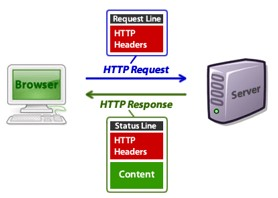

Servidor HTTP
El servidor HTTP (Hyper Text Transfer Protocol) és l'encarregat d'atendre les peticions que fan els navegadors web (Firefox, Chrome, Safari... ). De fet, hipertext és un terme per referir-nos al que coneixem com a pàgines web.
Tal com podem apreciar en l'esquema, el navegador fa una petició amb una determinada informació (capçaleres) sobre el que li està demanant i el servidor repon amb unes noves capçaleres junt amb el contingut sol·licitat.
Els navegadors fan bàsicament dos tipus de peticions HTTP, les peticions de tipus GET en què simplement sol·liciten informació (les més comunes), i les peticions tipus POST en què el navegador aporta certa informació al servidor. Per exemple, en el moment de fer login a una pàgina web, el navegador realitza una petició POST en què proporciona el servidor el nom d'usuari i la contrasenya.